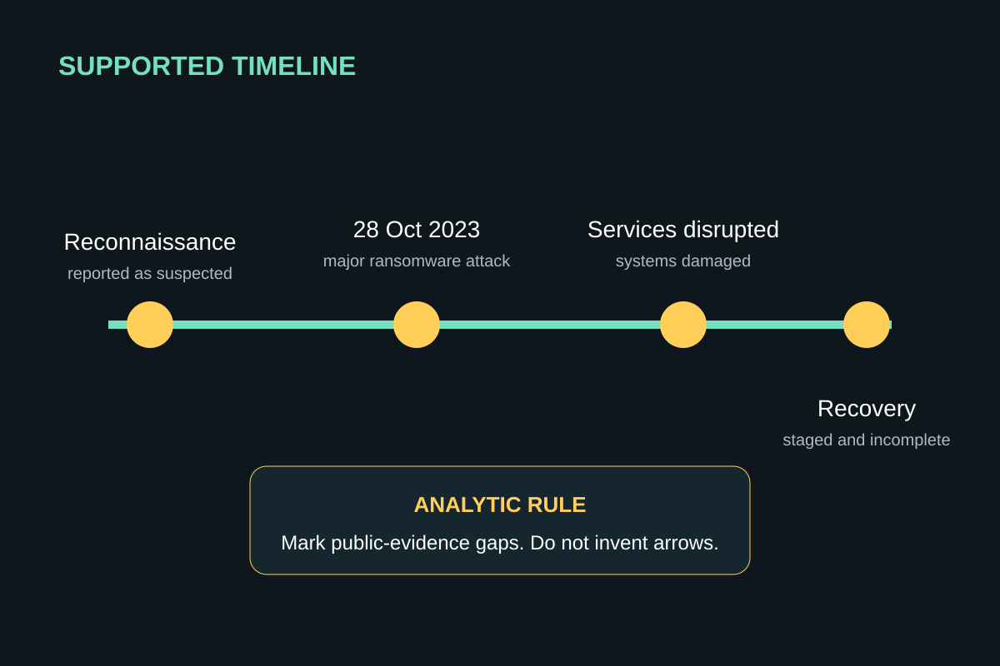

Step 17
Build from Gates 1–5
Paper 1 planner
Hotkey: Not applicable — use the named organizer.
Expected result
Evidence, mechanism, stakeholder and implication appear in a causal sequence
Evidence, mechanism, stakeholder and implication appear in a causal sequence
Why this matters
Operation 7 turns notes into analysis
Operation 7 turns notes into analysis
Warning — common failure
Copying the dossier as a list
Copying the dossier as a list
Repair it
Organize around the claim
Organize around the claim